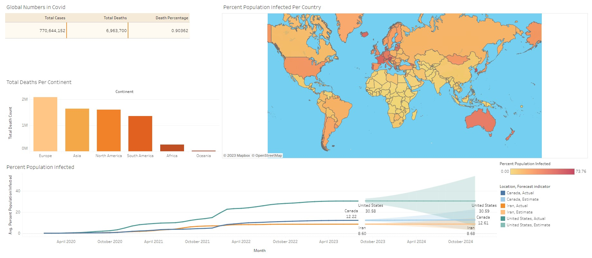
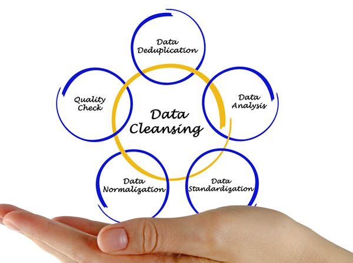

In this project, we employ SQL queries to extract key summaries, which we then translate into visually informative tables. You can access the dataset for this project by downloading it from: COVID-19 Deaths Dataset.
In this project, we clean a disorganized customer list using Pandas in Python to prepare it for use.

In this project, we embark on a data transformation journey within SQL Server, converting raw housing data into a structured and refined format, poised for seamless analysis.

In this project, we harness the versatile capabilities of SQL Server to embark on a comprehensive exploration of the global COVID-19 dataset. By employing SQL Server's robust data querying and manipulation tools, we aim to gain a holistic understanding of the profound impact of the COVID-19 pandemic on a global scale.
In this project, we utilize Python to delve into the interplay of different movie parameters and analyze how the production cost impacts income within the film industry.